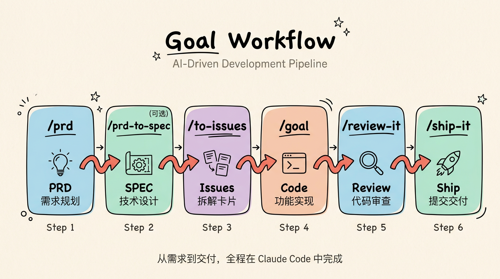

AI-driven development workflow — from PRD to shipped code
github.com/smallnest/goal-workflow
Usage Guide — 四步闭环研发工作流：规划、实现、审查、交付。
Goal Workflow 是一套基于 Claude Code / Codex 的 AI 研发工作流技能集，将软件开发的完整生命周期拆分为四个标准化步骤，每一步都由一个专属 Skill 驱动。
它让 AI Agent 能够像一个有经验的工程师一样——从理解需求、拆解任务、编写代码、审查质量，到最终提交合入——全流程自主完成。你只需描述功能想法，剩下的交给工作流。
需求文档生成 + Issue 拆解
选择卡片进行端到端实现
自动化代码审查与修复
提交 → PR → 合入 → 关闭
迭代式去 AI 味改写
ListenHub 文本转语音
UML 与架构图生成器
专家级代码重构
Go 代码现代化改造
实现笔记记录
通过 npx skills CLI 一键安装所有技能：
# 安装本仓库所有 skills
npx skills add smallnest/goal-workflow
# 或安装指定 skill
npx skills add smallnest/goal-workflow --skill prd
npx skills add smallnest/goal-workflow --skill review-it
npx skills add smallnest/goal-workflow --skill ship-it
npx skills add smallnest/goal-workflow --skill humanize-it
npx skills add smallnest/goal-workflow --skill listenhub-tts
npx skills add smallnest/goal-workflow --skill insight-diagram
npx skills add smallnest/goal-workflow --skill refactor
npx skills add smallnest/goal-workflow --skill modern-go
npx skills add smallnest/goal-workflow --skill notes
# 全局安装（所有项目可用）
npx skills add smallnest/goal-workflow -g
# 安装到指定 agent
npx skills add smallnest/goal-workflow -a claude-code| 工具 | 用途 | 安装 |
|---|---|---|
gh | GitHub CLI (Issue/PR 操作) | brew install gh && gh auth login |
claude | Claude Code CLI | npm install -g @anthropic-ai/claude-code |
npx | npm package runner | Node.js 自带 |
/prd、/review-it、/ship-it、/refactor、/modern-go、/notes、/humanize-it、/listenhub-tts、/insight-diagram 即可直接调用对应技能。
四步闭环，从需求到交付：

| 步骤 | 命令 | 输入 | 输出 |
|---|---|---|---|
| 1. 规划 | /prd |
功能描述 / 产品想法 | PRD 文档 + Issue 卡片 |
| 2. 实现 | /goal |
一个 Issue 卡片 | 可运行的代码实现 |
| 3. 审查 | /review-it |
代码变更 (dirty / branch) | 通过审查的干净代码 |
| 4. 交付 | /ship-it |
已审查的代码 | 已合入的 PR + 已关闭的 Issue |
/prd 将一个模糊的功能想法转化为结构化的产品需求文档，并拆解为可独立实施的 Issue 卡片。
# 在 Claude Code 中直接输入
/prd 给我们的任务管理系统加一个优先级功能
# 或使用触发词
写PRD：用户注册功能，支持邮箱和手机号
需求分析：为 API 增加限流能力tasks/prd-[feature-name].md# 生成的 Issue 列表
📋 Generated 4 Issues from PRD:
#1: Add priority field to database (backend, high)
#2: Display priority indicator (frontend, high) — depends on #1
#3: Add priority selector (frontend, medium) — depends on #1
#4: Filter tasks by priority (frontend, medium) — depends on #1, #2
/goal 是 Claude Code 内置的目标驱动开发模式。选择一个 Issue 卡片，Agent 会理解验收标准并端到端实现。
# Claude Code: 指定 GitHub Issue 编号
/goal #42
# Claude Code: 指定本地 Issue 文件
/goal tasks/issues/issue-001-add-priority-field.md
# Codex: 使用 --goal 参数
codex --goal "Implement issue #42: Add priority field to database"/goal 是 Claude Code 的内置功能，不包含在本 skill 包中。它与本工作流天然配合——/prd 生成的 Issue 格式正是 /goal 所期望的输入。
/review-it 在代码提交前进行自动化审查，发现潜在问题并迭代修复，直到审查通过。
# 审查未提交的变更（默认模式）
/review-it
# 审查整个分支 vs main
/review-it --mode branch
# 审查 + 测试并行执行
/review-it --parallel-tests "npm test"| 原则 | 说明 |
|---|---|
| Advisory | 审查结果视为建议，不盲目应用 |
| Verify | 每个发现都通过读取真实代码路径验证 |
| Reject noise | 拒绝不切实际的边界情况、投机性风险、过度重构 |
| Iterate | 修复后重新审查，直到无可操作发现 |
| Minimal | 优先小修复，不做不必要的大重构 |
| 工作树状态 | 模式 | 操作 |
|---|---|---|
| 有未提交变更 | local | 直接 /review |
| 已提交未推送 | branch | git diff origin/main...HEAD + review |
| 已推送 / PR | branch | 同上，自动检测 PR base |
| 干净工作树 | skip | 无需审查 |
/review-it 支持 Claude Code、Codex、OpenCode 和 DeepSeek TUI，会自动适配各 Agent 的审查命令。
/ship-it 是实现完成后的标准收尾流程：提交代码、创建 PR、合入、添加实现总结、关闭 Issue。
# 在 Claude Code 中调用
/ship-it
# 或使用触发词
提交代码
创建PR并合入# Step 1: 提交代码（关联 Issue）
git add <related files>
git commit -m "Add priority field to database (#42)"
# Step 2: 推送分支
git push -u origin feat/issue-42-priority-field
# Step 3: 创建 PR（body 包含 Closes #42）
gh pr create --title "Add priority field" \
--body "Closes #42 ..."
# Step 4: 合入
gh pr merge --squash --delete-branch
# Step 5: 关闭 Issue（如未自动关闭）
gh issue close 42 --reason completed| 场景 | 处理方式 |
|---|---|
| CI checks 失败 | 查看失败原因，修复后追加 commit 推送 |
| Merge conflict | Rebase origin/main，解决冲突后 force push |
| Branch protection | 确认 required reviews 已满足 |
| Issue 未自动关闭 | 确认 PR body 包含 Closes #N，或手动关闭 |
/ship-it 依赖 gh CLI。确保已通过 gh auth login 完成认证。
/humanize-it 对指定文档进行去 AI 味的改写。根据文档类型自动选择最合适的人性化策略，迭代改写直到效果达标。
# 在 Claude Code 中直接输入
/humanize-it docs/architecture.md
# 或使用触发词
去AI味：把这篇文档改成人话
降AIGC：humanize docs/blog-draft.md| Skill | 适用场景 | 改写风格 |
|---|---|---|
humanizer-zh | 通用文本、博客、文案 | 自然、有温度、带观点 |
humanize-chinese | 通用 + 学术 + 长文本 | 多风格（知乎/小红书/学术/文学等） |
technical-writing | 技术文档、架构说明、评审稿 | 平实、严谨、可论证 |
| 文档类型 | 优先策略顺序 |
|---|---|
| 技术文档 | technical-writing → humanizer-zh → humanize-chinese |
| 学术论文 | humanize-chinese (academic) → humanizer-zh → technical-writing |
| 通用文本 | humanizer-zh → humanize-chinese → technical-writing |
| 长文本 (≥1500字) | humanize-chinese (longform) → humanizer-zh → technical-writing |
/listenhub-tts 使用 ListenHub API 将文本转换为语音。支持三种合成模式，覆盖从短文本到长文本的全场景。
# 在 Claude Code 中直接输入
/listenhub-tts 把这段文字转成语音
# 或使用触发词
语音合成：将 README.md 朗读出来
生成音频：用晓曼的声音读这篇文章| 模式 | 接口 | 适用场景 | 特点 |
|---|---|---|---|
| 快速合成 | /v1/tts | 短文本（< 1000 字），单音色 | 低延迟，返回 MP3 二进制流 |
| 多角色脚本 | /v1/speech | 多角色对话、播客 | 不同音色交替朗读 |
| 长文本流式 | /v1/flow-speech/episodes | 长文本（> 1000 字） | 异步合成，支持 AI 润色 |
| 场景 | 行为 |
|---|---|
| 用户已指定音色 | 直接使用指定的 speakerId |
| 用户未指定音色 | 调用 API 获取音色列表，展示供用户选择 |
| 默认音色 | chat-girl-105-cn（晓曼 dxqqq） |
| 配置 | 说明 |
|---|---|
LISTENHUB_API_KEY | ListenHub API 密钥，设置为环境变量 |
aiPolish），可在合成前自动优化文本的口语化程度，让朗读效果更自然。
/insight-diagram 为任意项目生成 UML 图、架构图和流程图。分析代码库后让用户选择要生成的图表类型，渲染为 HTML+SVG 并保存到 docs/ 目录。
# 在 Claude Code 中直接输入
/insight-diagram
# 或使用触发词
生成架构图：分析项目结构并生成架构图
画流程图：为这个模块绘制调用流程图
生成UML图：生成类图和时序图共支持 17 种图表类型，分为结构性图形和行为性图形两大类：
| 编号 | 图表类型 | 关注点 |
|---|---|---|
| 1 | 系统架构图 ★ | 组件关系、全局视角（非UML，最常用） |
| 2 | 类图 | 定义类、属性、操作及关系 |
| 3 | 对象图 | 特定时刻的对象实例及其关系 |
| 4 | 组件图 | 系统组件及其依赖关系 |
| 5 | 部署图 | 物理硬件、节点及软件部署 |
| 6 | 包图 | 将模型元素分组组织 |
| 7 | 复合结构图 | 类的内部结构 |
| 8 | 剖面图 | 扩展UML元模型、自定义构造型 |
| 编号 | 图表类型 | 关注点 |
|---|---|---|
| 9 | 流程图 ★ | 主流程与分支（非UML，最常用） |
| 10 | 用例图 | 从用户角度展示系统功能 |
| 11 | 活动图 | 过程的流程或步骤 |
| 12 | 状态机图 | 对象生命周期的状态变迁 |
| 13 | 序列图 | 按时间顺序展示对象间交互 |
| 14 | 通信图 | 侧重于对象间的组织关系 |
| 15 | 定时图 | 侧重于状态变化的时间约束 |
| 16 | 交互概览图 | 结合活动图和时序图 |
| 17 | 泳道图 | 跨组件/角色职责流程（活动图变体） |
★ 标注为最常用的图表类型。默认推荐组合：架构图 + 序列图 + 流程图。
docs/ 目录src/services/ 目录"、"重点分析数据库层"，生成结果会更聚焦。
/refactor 基于 Martin Fowler《重构》第 2 版的完整目录，提供专家级代码重构能力。通过识别代码坏味道并应用经过验证的重构手法，在不改变外部行为的前提下改善代码的可维护性、可读性和结构。
# 在 Claude Code 中直接输入
/refactor
# 或使用触发词
重构：重构 UserManager 类，它太大了
code smell：这个函数有 Feature Envy，修复它
extract method：把这个长方法拆分成更小的函数共识别 22 种代码坏味道，按五大类别组织：
| 类别 | 坏味道 | 主要重构手法 |
|---|---|---|
| 臃肿类 | 过长方法 | Extract Method, Replace Temp with Query |
| 过大的类 | Extract Class, Extract Subclass | |
| 基本类型偏执 | Replace Data Value with Object | |
| 过长参数列表 | Introduce Parameter Object | |
| 数据泥团 | Extract Class | |
| OO 滥用类 | Switch 语句 | Replace Conditional with Polymorphism |
| 临时字段 | Extract Class, Introduce Null Object | |
| 被拒绝的遗赠 | Replace Inheritance with Delegation | |
| 异曲同工的类 | Rename Method, Extract Superclass | |
| 变更阻碍类 | 发散式变化 | Extract Class |
| 霰弹式修改 | Move Method, Move Field | |
| 平行继承体系 | Move Method, Move Field | |
| 冗余类 | 注释（代码自说明） | Extract Method, Rename Variable |
| 重复代码 | Extract Method, Pull Up Method | |
| 冗赘类 | Inline Class, Collapse Hierarchy | |
| 纯数据类 | Move Method, Encapsulate Field | |
| 死代码 | 删除（Git 历史有记录） | |
| 夸夸其谈未来性 | Inline Class, Remove Parameter | |
| 耦合类 | 依恋情节 | Move Method |
| 狎昵关系 | Move Method, Move Field | |
| 消息链 | Hide Delegate | |
| 中间人 | Remove Middle Man | |
| 不完美的库类 | Introduce Foreign Method |
40+ 种重构手法，分 6 大类，每种附带机械步骤和对比示例：
| 类别 | 手法数 | 代表性手法 |
|---|---|---|
| 组合方法 | 9 | Extract Method, Inline Method, Extract Variable, Replace Temp with Query, Substitute Algorithm |
| 移动特性 | 7 | Move Method, Move Field, Extract Class, Inline Class, Hide Delegate |
| 组织数据 | 13 | Replace Data Value with Object, Encapsulate Field, Replace Type Code with Subclasses, Replace Magic Number |
| 简化条件 | 8 | Decompose Conditional, Guard Clauses, Replace Conditional with Polymorphism, Introduce Null Object |
| 方法调用 | 13 | Rename Method, Separate Query from Modifier, Introduce Parameter Object, Replace Error Code with Exception |
| 泛化 | 9 | Pull Up Method, Push Down Method, Extract Interface, Form Template Method, Replace Inheritance with Delegation |
| 语言 | 核心建议 |
|---|---|
| Java | final 局部变量、IDE 自动重构、Records、Sealed Classes |
| TypeScript | 解构减少参数、const 优先、Union Types 替代类型码、?. 消除 null 检查 |
| Python | Type Hints、dataclasses、@property、Context Managers |
| Go | 小接口、命名返回值、表格驱动测试、early returns 消除嵌套 |
| Rust | Result/Option 替代错误码和 null、Pattern Matching、From trait、Derive macros |
/modern-go 自动将 Go 代码升级为现代写法和 API，类似 go fix。扫描 go.mod 检测 Go 版本，对 Go 源文件批量应用版本适配的转换规则，覆盖从 Go 1.0 到 1.26+ 的 35+ 条规则。
# 在 Claude Code 中直接输入
/modern-go
# 或使用触发词
modernize：现代化改造这个项目的 Go 代码
升级Go代码：更新到 Go 1.22 的写法
gofix：扫描 pkg/ 目录并应用转换go.mod 获取 Go 版本.go 文件goimports -w 清理 import| 版本 | 规则 | 示例（Before → After） |
|---|---|---|
| 1.0+ | time.Since | time.Now().Sub(start) → time.Since(start) |
| 1.8+ | time.Until | deadline.Sub(time.Now()) → time.Until(deadline) |
| 1.10+ | strings.Builder | 循环内 s += item → strings.Builder |
| 1.13+ | errors.Is | err == io.EOF → errors.Is(err, io.EOF) |
| 1.18+ | any, strings.Cut, bytes.Cut | interface{} → any, Index+切片 → Cut |
| 1.19+ | fmt.Appendf, 类型安全原子操作 | append(buf, fmt.Sprintf(...)...) → fmt.Appendf |
| 1.20+ | strings.Clone, CutPrefix/CutSuffix, errors.Join | string([]byte(s)) → strings.Clone(s) |
| 1.21+ | min/max, clear, slices/maps 包 | 手动循环 → slices.Contains, maps.Clone 等 |
| 1.22+ | range over int, cmp.Or, reflect.TypeFor | for i:=0;i<n;i++ → for i:=range n |
| 1.23+ | 迭代器 helpers, SplitSeq/FieldsSeq | for _,p:=range strings.Split(s,sep) → SplitSeq |
| 1.24+ | t.Context(), omitzero, b.Loop() | 测试中 context.Background() → t.Context() |
| 1.25+ | wg.Go() | wg.Add(1); go func(){defer wg.Done();fn()}() → wg.Go(fn) |
| 1.26+ | new(expr), errors.AsType | v:=42; &v → new(42) |
omitzero 仅建议不自动应用（可能改变 JSON 序列化行为）SplitSeq 仅在循环体不需要索引或完整切片时应用strings.Builder 仅当拼接发生在循环内时应用goimports 清理/modern-go pkg/ 仅改造 pkg/ 目录，或 /modern-go main.go 仅改造单个文件。
/notes 在代码实现和审查完成后，为当前 Issue 生成一份结构化实现笔记，记录设计决策、偏离、权衡和待确认问题，输出为 HTML 格式保存到 docs/ 目录。
# 在 Claude Code 中直接输入
/notes
# 或使用触发词
记录笔记：为 Issue #42 生成实现笔记
implementation notes：记录本次实现的决策和偏离| 类别 | 关注点 | 示例 |
|---|---|---|
| Design Decisions | 规格模糊处的选择及理由 | 为什么选择接口多态而非 switch |
| Deviations | 有意偏离规格的地方及原因 | 简化了错误处理策略的理由 |
| Tradeoffs | 考虑的替代方案及取舍分析 | 内联 vs 提取函数的选择 |
| Open Questions | 需要确认或修改的事项 | 性能假设是否需要基准测试验证 |
docs/issue#XXXX.html
/notes 位于工作流中 /review-it 和 /ship-it 之间，作为提交前最终检查点——确保实现意图被完整记录，方便后续维护者理解代码背后的决策逻辑。
Goal Workflow 的技能可在多个 AI Coding Agent 中使用：
| Agent | /prd | /goal | /review-it | /notes | /ship-it | /refactor | /modern-go | /humanize-it | /listenhub-tts | /insight-diagram |
|---|---|---|---|---|---|---|---|---|---|---|
| Claude Code | ✓ | ✓ (内置) | ✓ | ✓ | ✓ | ✓ | ✓ | ✓ | ✓ | ✓ |
| Codex | ✓ | ✓ (--goal) | ✓ | ✓ | ✓ | ✓ | ✓ | ✓ | ✓ | ✓ |
| OpenCode | ✓ | — | ✓ | ✓ | ✓ | ✓ | ✓ | ✓ | ✓ | ✓ |
| DeepSeek TUI | ✓ | — | ✓ | ✓ | ✓ | ✓ | ✓ | ✓ | ✓ | ✓ |
| 平台 | 工具 | 说明 |
|---|---|---|
| GitHub | gh issue create | 需要 gh CLI 认证 |
| Local | Markdown 文件 | 保存到本地目录 |
| Baidu iCafe | icafe-cli | 需要 iCafe 空间参数 |
不必。每个 Skill 都是独立的，可以单独使用。比如你已经有 Issue 了，可以直接从 /goal 开始；代码已经写好，可以直接用 /review-it 审查。但完整走一遍四步流程能获得最好的效果。
/goal 是 Claude Code 的内置功能，不需要额外安装。本工作流的 /prd 生成的 Issue 格式与 /goal 的期望输入完全匹配。
可以。/prd 支持将 Issue 保存为本地 Markdown 文件或创建到百度 iCafe。/review-it 只需要本地 git 仓库。/ship-it 目前依赖 GitHub（gh CLI）。
/review-it 是自动化的自查（self-review），在提交前发现明显问题。它不替代团队 code review，而是在 PR 创建前提升代码质量，减少 reviewer 需要指出的低级问题。
每个 Issue 应该是一个 Agent 在单次会话中可以完成的工作量——通常是 1-3 个文件的变更，有明确的验收标准。/prd 会自动按这个粒度拆解，但你可以在确认前调整。
通过 npx skills add 安装时选择 -a codex。在 Codex 中使用 codex --goal "..." 替代 /goal，/review-it 在各 Agent 中通用。
数字 42 并非迭代次数有特殊要求，而是向经典科幻小说《银河系漫游指南》（The Hitchhiker's Guide to the Galaxy）致敬的极客文化。在该书中，超级计算机经过 750 万年计算，得出了"生命、宇宙及一切的终极答案"就是 42。在编程界，这个数字非常流行，原因有二：
*。在计算机科学中，* 经常被用作通配符，表示"任何事物"或"一切皆有可能"。因此，"终极答案是 42（*）"刚好契合了"任何你想要的答案"这一哲学梗。实际使用中，大多数文档在 3-5 轮迭代后就能达标。迭代的核心是智能切换策略——当一种改写方式效果停滞时，自动换用另一种，三种策略组合使用可以互补覆盖不同类型的 AI 痕迹。
目前 /humanize-it 的三个子 skill 主要针对中文文本优化。humanizer-zh 的模式检测规则对英文也部分适用，但改写效果以中文为最佳。
前往 listenhub.ai 注册并获取 API Key，然后设置为环境变量：export LISTENHUB_API_KEY=your_key。
ListenHub 支持中文（zh）和英文（en）等多种语言的音色。调用音色列表 API 时可通过 ?language=zh 参数筛选。
/insight-diagram 支持 17 种图表类型，包括系统架构图、14 种 UML 图（类图、对象图、组件图、部署图、包图、复合结构图、剖面图、用例图、活动图、状态机图、序列图、通信图、定时图、交互概览图）、流程图和泳道图。输出为 HTML+SVG 格式，保存到 docs/ 目录。适用于任何软件项目。